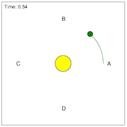

This model simulates a planet's orbit around a larger mass. Students can view uniform circular motion (similar to illustration 3.5) and noncircular motion. In either case, students can observe how the acceleration and velocity change throughout the orbit.